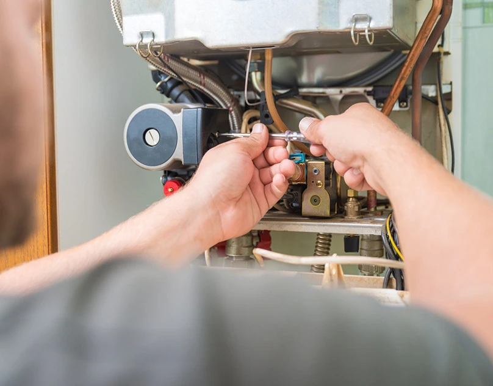

Baktığımız Cihazlar
Evdeki tüm beyaz eşya, klima ve kombiler
Çamaşır ve bulaşık makinesinden buzdolabı, klima ve kombiye kadar; tüm markalarda yerinde tamir ve bakım yapıyoruz.



Buzdolabınız soğutmuyor, makineniz su almıyor, klimanız üflemiyor ya da kombiniz ısıtmıyor mu? Bulunduğunuz bölgenin tüm ilçelerinde arızanıza aynı gün yerinde müdahale ediyoruz. Net fiyat söyler, onayınızı alır, işçiliğimize garanti veririz.
Bağımsız özel servistir. Herhangi bir markanın yetkili servisi değiliz; tüm marka beyaz eşya ve klimalar için tamir hizmeti veriyoruz.
Beyaz eşya, klima ve kombide beş ana alanda hizmet veriyoruz. Cihazınıza tıklayın; en sık karşılaşılan arızaları ve çözümlerini detay sayfasında bulun.
Yeterince soğutmayan, içine su biriken, sürekli çalışan ya da No-Frost sistemi arızalanan dolaplar.
DetaySu almayan, suyu boşaltmayan, sıkma yapmayan, aşırı titreyen veya hata kodu veren makineler.
DetayBulaşıkları yıkamayan, su almayan, kötü kokan, tahliye veya rezistans sorunu yaşayan cihazlar.
DetaySoğutmayan/ısıtmayan klimalar; gaz dolumu, iç-dış ünite temizliği, montaj-demontaj ve su akıtma sorunu.
DetayIsıtmayan, sıcak su vermeyen, basıncı düşen veya arıza kodu veren kombiler; periyodik bakım ve gaz cihazı kontrolü.
DetayÇamaşır ve bulaşık makinesinden buzdolabı, klima ve kombiye kadar; tüm markalarda yerinde tamir ve bakım yapıyoruz.


Yılsa Teknik Servis'te işi alanında yıllarını vermiş teknisyenler yapar. Cihazınıza önce doğru teşhisi koyar, değişmesi gereken parça varsa size gösterir ve maliyeti baştan net söyleriz. Onayınız olmadan tek bir vida bile sökmeyiz; yaptığımız işçiliğin arkasında garantiyle dururuz.
Çağrınızı aldıktan sonra bölgenize en yakın teknisyeni hızlıca yönlendiririz.
Sürpriz ücret yok. Arızayı ve toplam tutarı işe başlamadan önce net söyleriz.
Yaptığımız onarımı garanti ediyoruz; aynı arıza süre içinde tekrarlarsa yeniden bedel almayız.
Piyasadaki beyaz eşya ve klima markalarının neredeyse tamamına tamir desteği sunuyoruz.
Telefon veya WhatsApp'tan cihazınızın markasını ve yaşadığınız sorunu kısaca iletin.
Size uygun saatte adresinize geliriz, arızayı yerinde inceleyip net fiyatı söyleriz.
Fiyatı onayladığınızda işlemi tamamlar, cihazınızı çalışır halde teslim ederiz.
Tek bir telefonla arıza tespiti başlasın. Hafta içi ve hafta sonu, her gün 08:00 – 22:00 arası bölgenizde yanınızdayız.